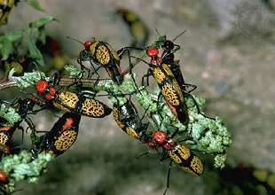
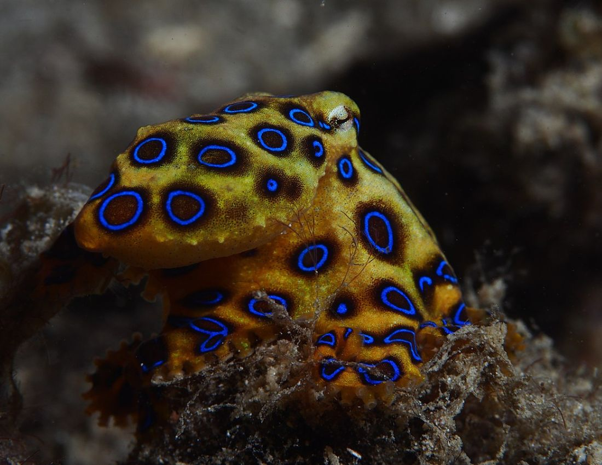
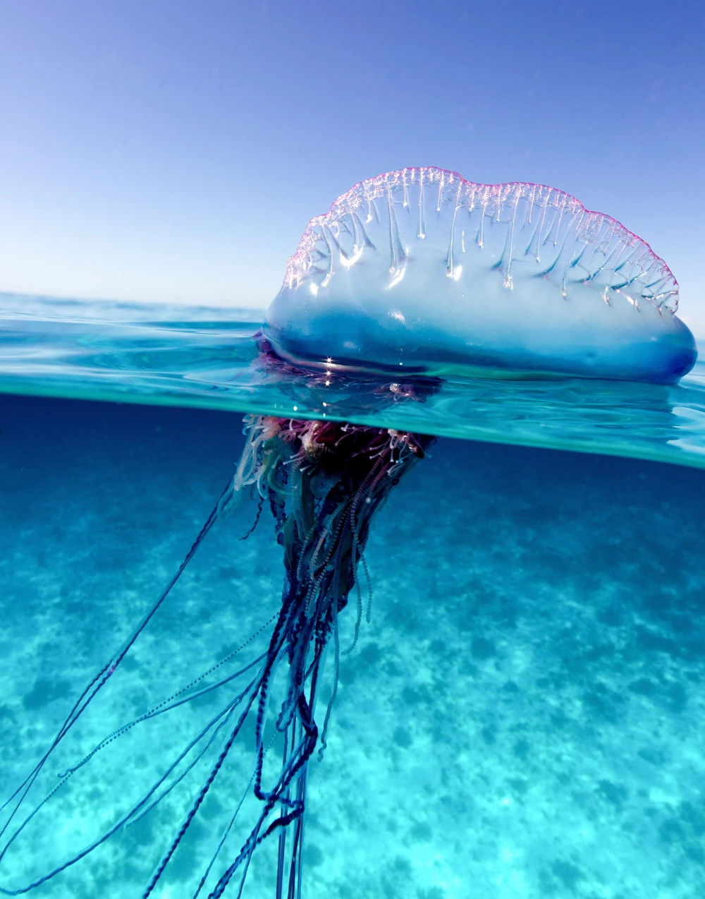

This is segment of What is That? (& Don't Touch Them!)
Nature's rule number one: If it's the same color as a highlighter, don't touch
it, don't lick it, and just stay away from it.
While this seems like an easy rule to follow, the internet is filled with viral videos of<
people who were unaware of this unspoken rule or who just ignored it altogether in an attempt
at 15 minutes of fame.
There are millions of species of invertebrates, meaning every single person, including scientists,
is unfamiliar with the vast majority of them.
There are simply only so many species our little brains can keep track of.
And so what surprises me the most about today's topic is not how many of these species are
known to be toxic.
No.
It's how many people are willing to touch something they don't know.
That feels like something we should all be able to agree on as a species.
If you don't know it, don't touch it.

So as a tactic to avoid being harmed or eaten, many species have evolved the ability to produce
poison or venom as a defense mechanism, of course, and to eliminate that chance even
further, evolved a physical warning signal that they are practically screaming
“Stay. Away. From. ME!”
This is known as aposematism. Aposematism is distinct or conspicuous colors that tell a potential predator, if you hurt
me, I'll hurt you 10 fold.
The Blue Ringed Octopus

Blue rings that appear all over their body when threatened.
So they're a little bit different than the typical examples of aposematism we immediately
think of, like poison dart frogs, that are always displaying their warning colors, and
always telling everyone to staw away.
The blue-ringed octopus only tells you to staw away when you're making it uncomfortable
or feel unsafe, using color-changing cells called chromatophores they have all over their body.
In combination with special light-reflecting cells called iridophores.
Think iridescent.
scientists have been able to describe 4 species of blue-ringed octopuses,
with potentially more to be discovered in the future.
There is the greater blue-ringed octopus, found around Indonesia and the Philippines;
the lesser blue-ringed octopus found around Australia; the blue-lined octopus which, yeah,
has some lines in combination with the classic rings.
Pretty cool. In India, the Hapalochlaena Nierstraszi (good luck saying thatt 5 times fast).
So what makes the blue-ringed octopus so venomous?
Well, they produce an extremely potent neurotoxin called tetrodotoxin.
Or TTX for short.
Some sources have mentioned that a single octopus can hold enough venom to kill 26 people.
In 2019, a team of scientists looked into the toxicity of the greater blue-ringed octopus
in Japan, specifically how its distributed.
Because their bites are toxic, obviously, but they also have venom kind of all over
so no, you cannot eat them by the way.
Portuguese man-of-war.

Related to jellyfish and kinda look like jellyfish, but very different.
Their tentacles can get over 100 ft long and deliver excruciatingly painful stings that,
on very rare occasion, can be deadly.
So let's break it down.
The man-of-war is a siphonophore, in the phylum Cnidaria, along with jellyfish, sea anemones,
and coral.
Coral is an animal???
Yes.
Although the man o war looks like a weird jellyfish, they actually kind of live a lifestyle
more like coral. Both corals and siphonophores are colonial creatures, that have tiny little individuals
called zooids all living on the same body. They can't live separately from the colony. They're connected
to each other by tissue. It's kind of a weird concept. I guess kind of ike leaves on a tree. In animal form.